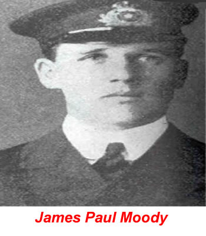

.jpg)
14 Nisan 1912 saat 23:39'da (gemideki saat), Titanic, New Foundland'ın Grand Banks güneyi açıklarında seyir etmekteydi. Gözcü Frederic Fleet gemi'nin ön tarafında tam olarak seçilemeyen büyük bir buzdağı farketti.Fleet geminin çan'ını üç kez çaldı ve köprüye telefon etti. Telefona Altıncı subay James Paul Moody cevap verdi. Fleet "Orda biri var mı?" diye bağırdı. Moody "Evet ne gördün?" diye cevap verdi. Fleet "Tam önümüzde buz dağı var!" şeklinde bağırdı. Moody kıdemli ve o anda köprüde sorumlu Birinci subay William Mcmaster Murdoch'u uyarmadan önce "Teşekkür ederim" şeklinde cevap verdi ve telefonu kapattı.
Murdoch'in Emirleri
Birinci Subay Murdoch Kaptan Smith'in durumunda olduğu gibi, Birinci subay Murdoch'in çarpışma sırasında vermiş olduğu emirler ile ilgili de çok fazla iddia ortaya çıkmıştır. Genel olarak kabul görülen, Murdoch'ın "Tam Sancak Tarafı" (Gemi'nin dümenini bir yöne çevirmek için kullanılır.) şeklinde emir vermiş olduğudur. Bu sayede gemi dönecek ve muhtemel bir çarpmadan kurtulacaktı. Kaza sırasında köprüye giren ve birbirlerini gören Dördüncü Subay Joseph Boxhall tarafından, Murdoch'a geminin makina dairesine bağlı telegrafı "Tam tornistan" 'a getirmesi rapor edildi. Boxhall’ın bu ifadesini makina dairesi yağcısı Frederick Scott yalanlamıştır. Ona göre motor odası telegrafı önce "Dur" işaretini göstermekteydi. Ayrıca Kazan dairesinin çavuşlarından Frederick Barret ise kazan'daki ateş göstergelerinin önce tam da olduğunu daha sonra dur'a gittiğini ifade etmiştir. Tam o esnada veya daha önce Murdoch iskele tarafına tam bir dönüş emri vermiş olabilirdi. (Serdümen subayı Alfred Olliver çarpışma esnasında köprüye doğru giderken bu emri duyduğunu ifade etmiştir.)Burada denenmeye çalışılan ve sağa doğru kalma manevrası olarak bilinen bu hareket, dümen yekesini tamamen sola taşımak bu sayede geminin sağa dönmesini sağlamak ve kalan arka kısmı buzdağından uzak tutmaktı. Yapılan bu manevra gemi'nin arka tarafının buzdağına asla çarpmayacağı konusunda ifade veren diğer mürettabat üyeleri tarafındanda desteklenmiştir. Çarpışma esnasında dümende olan dördüncü subay Robert Hichens ve köprüde olup olmadığı tam belli olmayan dördüncü subay Boxhall, her ikiside Murdoch'in Hichens'e verdiği son emrinin "Tam sancak tarafı!" olduğunu ifade etmişlerdir.
Murdoch'in Emirleri
Birinci Subay Murdoch Kaptan Smith'in durumunda olduğu gibi, Birinci subay Murdoch'in çarpışma sırasında vermiş olduğu emirler ile ilgili de çok fazla iddia ortaya çıkmıştır. Genel olarak kabul görülen, Murdoch'ın "Tam Sancak Tarafı" (Gemi'nin dümenini bir yöne çevirmek için kullanılır.) şeklinde emir vermiş olduğudur. Bu sayede gemi dönecek ve muhtemel bir çarpmadan kurtulacaktı. Kaza sırasında köprüye giren ve birbirlerini gören Dördüncü Subay Joseph Boxhall tarafından, Murdoch'a geminin makina dairesine bağlı telegrafı "Tam tornistan" 'a getirmesi rapor edildi. Boxhall’ın bu ifadesini makina dairesi yağcısı Frederick Scott yalanlamıştır. Ona göre motor odası telegrafı önce "Dur" işaretini göstermekteydi. Ayrıca Kazan dairesinin çavuşlarından Frederick Barret ise kazan'daki ateş göstergelerinin önce tam da olduğunu daha sonra dur'a gittiğini ifade etmiştir. Tam o esnada veya daha önce Murdoch iskele tarafına tam bir dönüş emri vermiş olabilirdi. (Serdümen subayı Alfred Olliver çarpışma esnasında köprüye doğru giderken bu emri duyduğunu ifade etmiştir.)Burada denenmeye çalışılan ve sağa doğru kalma manevrası olarak bilinen bu hareket, dümen yekesini tamamen sola taşımak bu sayede geminin sağa dönmesini sağlamak ve kalan arka kısmı buzdağından uzak tutmaktı. Yapılan bu manevra gemi'nin arka tarafının buzdağına asla çarpmayacağı konusunda ifade veren diğer mürettabat üyeleri tarafındanda desteklenmiştir. Çarpışma esnasında dümende olan dördüncü subay Robert Hichens ve köprüde olup olmadığı tam belli olmayan dördüncü subay Boxhall, her ikiside Murdoch'in Hichens'e verdiği son emrinin "Tam sancak tarafı!" olduğunu ifade etmişlerdir.
